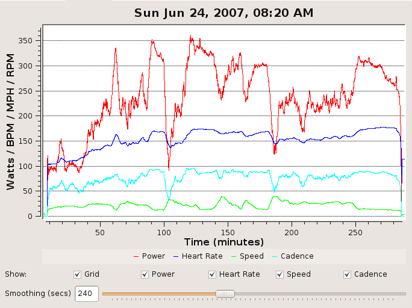

A stage race is a race that consists of several, independent races, called stages, run over multiple days. As with normal races, there are prizes and points awarded for the top placings in each stage. There are also prizes and points for the lowest cumulative time after the final stage; this ranking is called the general classification (GC).
Since my last race report, I've done two stage races--the Mt. Hood Cycling Classic and the Elkhorn Classic Stage Race--both in Oregon. Each of these races was several days long and a full day's drive away. They're grueling, painful affairs.
They are also a great way to earn upgrade points. For upgrading from Cat 3 to Cat 2, the breakdown is like this:
| Event | Places | Point Breakdown |
| Road Stage | 1st-8th | 10-8-6-5-4-3-2-1 |
| Criterium Stage | 1st-6th | 7-5-4-3-2-1 |
| GC | 1st-15th | 20-17-15-13-11-10-9-8-7-6-5-4-3-2-1 |
There's a limit of 20 points per racer per stage race, but with only 25 points needed to upgrade to Cat 2, it should be clear that stage races are a great opportunity for cyclists who can ride hard for multiple consecutive days.
In addition to multiple road race and criterium stages, each stage race usually contains a time trial. Unlike the other stages, time trials are not mass start events; racers are started thirty seconds apart and are not allowed to draft during the race. This limitation renders all of the usual cycling tactics useless; there are no pacelines, no breakaways, and no blocking. The cyclist that turns the biggest gear longest, while at the same time holding the most aerodynamic position, is the one that wins. Also unlike the other stages, there are no points awarded for the places in the TT, but with the elimination of drafting, the time differences between racers can be much higher than in the other stages, making the TT a very important stage for GC position.
Mt. Hood went really well for me. I held my own with the climbers on the first day's road stage, losing only 19 seconds up the final hill. I then put in a great time in the second day's TT, placing fifth in the stage and moving into third on GC. The third day's 87-mile road race didn't move me around within the GC, but left me with only a slight, five-second lead over fourth place. The final day's criterium was nervous and crash-filled, but again I held my position, landing a spot on the overall podium.
Frank, on the left, is 41 years old. I'm on the right, and I'm 30. Ian, in first place, is 16. Talk about an age spread! It was a great day, and a great race. I earned 15 points for my GC placing and another 3 for my sixth-place finish on day 3.
I was going to write a longer race report about Mt. Hood, but in the meantime I raced Elkhorn. I didn't place as well there as I did at Mt. Hood, but I did have one incredible day in the saddle. Read on to hear the story.
The Elkhorn Classic consists of four stages run over three days. It starts with an 82-mile road race with 3,400 feet of climbing. The next morning, there's a 10-mile time trial, followed by a 45-minute criterium that evening. The race finishes with an epic, 101-mile road stage with four long climbs, the last of which rises 2,000 feet in only eight miles.
I did well, though not outstandingly, in the first two days. I finished seventh in the first stage, losing only six seconds to a two-man breakaway that went with 4 km to go. I had high hopes for the next day's TT, but the 10-mile course was shorter and less challenging than I would have liked. Still, I managed to pull myself into fifth in the GC. Had it been as long as the TT at Mt. Hood, I think I might have done even better. The criterium that evening was fast and fun, but it failed to shake up the GC.
With the two points I earned for placing seventh in the first day's road race, I found myself with 23 points for the season--just two short of the 25 I needed to upgrade. I could meet my season goal of upgrading to Cat 2 either by placing 7th or better in the stage or holding on to at least 14th in GC. Moreover, the guy sitting first in the overall, Greg Gambetta of Davis Bike Club, had a large, strong team, and I expected they'd reel in any breaks that slipped away early in the day, leaving the final hill for us to slug it out.
At the same time, I was tired. Not only on account of the last two days, but just in general as well. I'd been training hard since early winter, and I needed a break. Upgrade or not, I was planning to take it easy for several weeks after Elkhorn. But needless to say, I was really hoping to upgrade first.
As I expected, several racers from Davis Bike Club quickly moved to the front to pull the break back in. The pace was fast, and five of the riders in the break fell back to the peleton over the next 20 miles, but the remaining seven added to their lead, which had grown to over two minutes by mile 40. Worse still, Davis Bike Club was looking exhausted. It generally takes a well-coordinated effort in the peleton to pull in a motivated break, and I couldn't see who in the group had both the energy and the willingness to put out such an effort. At the same time, we still had 60 miles of racing to go, and there was always the possibility that the break had gone too hard in establishing their current lead; maybe they'd come back all on their own.
What to do?
I decided I couldn't risk it. At least if I was off the front, I'd be in control of my own fate, rather than just sitting in the peleton hoping someone else would bring the break back. Moreover, a couple of guys attacked at the bottom of the second major hill, forcing my hand. I went with them. Shortly thereafter, two others joined us.
I'm always amazed at the way a break gets away. Just like in the Berkeley Hills Road Race, our move felt doomed for the longest time. At one point, they pulled us back to within 100 meters. Then all of a sudden it felt like the pack just gave up, and the next thing we knew, we were out of sight.
I would then spend the next 60 miles yelling.
"Don't forget to eat and drink! We've got several more hours until the finish!"
"Keep the rotation smooth! Take a short pull and then pull off!"
Just when I think I might as well shut up, Max rides up to me and says, "Don't stop. Every time you quiet down, they stop working." So I keep on, getting progressively more frantic as our fatigue level rises.
"You know what's going on back there in the pack? They hate each other right now. Everyone's yelling at everyone else to take a pull, and no one wants to. They're thinking: `Who's going to bring back the break?' It's our cooperation that keeps us away!"
"Think of how Greg Gambetta feels right now! He's back there, saying to himself, 'How the hell did I lose a 20-second lead on GC?'"
"You're going to be telling this story for years! The day you broke away 40 miles into the final day of Elkhorn and held it to the finish!"
My favorite part of being in a breakaway is how the shared suffering binds everyone together. After an hour off the front, we're all patting each other on the back, saying things like, "Good pull!" or, "You're looking beat. Why don't you sit out a rotation?" Until we finish or get caught, we're all brothers.
Or we would be, except that the race ends in a climb, which we reach with a slim, two-minute lead on the peleton. Once the road pitches up, the wind is no longer the dominating factor, and only Max, Joseph, and I continue to take turns at the front. More and more, I can hear the others breathing behind us.
On the fifth or sixth switchback of the climb, someone yells, "There's the pack!" and sure enough, we can see them just hitting the base of the hill below. "Get to the left of the road!" I yell, "Don't let them see us or they'll chase harder!"
Whether they see us or not, I see them, and my pace quickens. Max takes turns pulling with me, but Joseph has dropped back now, too. Soon, only the three of us and Nils Johnson of Davis bike club remain. With his teammate in first on GC, Nils has had the good fortune to sit on the back of the break all day; no one expects him to work, and he's looking like the favorite for the stage win.
Twenty minutes into the climb, Max asks me to pull through, and I refuse. "Don't you dare attack me!" he responds, but he has nothing to worry about. Looking down at my bike computer, I see that I'm barely putting out 250 watts, a pace I can normally maintain with ease, yet my legs feel like I'm going all-out. Max continues to pull at a hard, steady pace, but then Nils attacks. Only Max can respond, leaving Joseph and I on our own.
It's a terrible feeling to be dropped. It's a long, steep climb, and I can see Max and Nils for a long time. It's clear what I need to do. I need to bridge back up and sit on their wheels. But I can't. I stand up, I mash the pedals, I try to will my legs back up to 350 watts, but they refuse. And so I sit and grind my way along, keeping the power as I high as I can. And Joseph sits on, refusing to pull through. I know what he's doing, but I'm worried only about putting time on the main pack.
At 3 km from the finish, Joseph finally attacks; I can't respond, but he stops gaining after putting only 50 meters on me. Shortly thereafter, Andrew Rosette of Second Ascent comes roaring by both of us. Andrew wasn't in the break. It's finally happened; we've begun to be caught. The only question now is: how many more will catch us?
I bury my head in my bars and hammer on. I know we're close; maybe five minutes from the finish. My legs hurt so bad I'm starting to have trouble riding in a straight line.
With 1 km to go I look back and see Greg Gambetta leading a group of five other guys only 50 meters back. He is flying. The contrast couldn't be sharper: his cadence must be 110 RPM, mine can't be over 70. I focus on the road ahead and push for all I'm worth. With a twenty-second lead over me in the GC, it doesn't so much matter whether he catches me, but I can't let the other five racers he's bringing with him gain enough time to overtake me in the GC.
I manage to hold them until 200 meters to go. Within sight of the finish, they fly past me as they start their sprint. I make one last effort, standing and winding the pedals up as best I can, but there's just nothing left. Thought I don't quite manage to stay with them, it's too late for them to put any real time into me, and I finish within two seconds of Greg.
As I lay on the ground at the finish, staring up at the sky, I wonder whether I've done it. I try to think which of the riders that past me were in the top 10 before today, and whether they put enough time into me to move me down in GC. Honestly, I'm so tired I can't even remember how many were up the road when I finished. Was it 10, or 20? My memory is a blur. I know for sure I didn't place high enough in the stage to earn any points; but the GC ordering is escaping me. Did I hold on for at least 14th, enough to upgrade?
Eventually, I give up. I'm too tired to think straight. Besides, there's a guy across the road pouring beer from a portable tap. I struggle to my feet and leave my bike behind. The beer tastes wonderful, but it goes straight to my quads, and I have to sit back down. Max finds me, as do several others from the breakaway, and we sit and drink beer and laugh while we reminisce about the incredible ride we've just had.
Finally, they post the results: I held on for fifth, earning another 11 points and leaving me with a total of 34, 9 more than I need to upgrade. As I stand there, reading the results again and again, I think of all that went in to making this moment happen. All of the nights I didn't go out with friends. All of the early mornings I rode for hours before work. The camping trips I skipped. The pain of doing intervals alone. All of these images are in my head as my mouth slowly creeps into a smile, and I say quietly to myself, "I'm a Cat 2."
From: Casey Kerrigan
To: Sean Rhea
Date: Jun 27, 2007 9:44 AM
Subject: Re: Upgrade Request
Your upgrade request has been approved. An upgrade sticker has gone into the mail today and you should have it in a few days. Place this sticker on the front of your license in a place where it doesn't coverup other information on your license.
If you will be racing before you get your upgrade sticker in the mail you can print out a copy of this message and bring it with you to show proof of your new racing category to the registration people.
Upgraded to Cat 2 Road
Casey Kerrigan
NCNCA President
|  |
| A graph of the data collected by my cycling computer during the race. You can see how my power (red line) dropped off towards the end of the final hill. Fresh, I can put out around 340 watts for 30 minutes; after being off the front all day, I averaged only 292 watts during the last 30 minutes of the race. Notice that my heart rate (dark blue line), though, was just as high as it was at the start of the break, around 125 minutes into the day. Ah, fatigue. :) |